This week we take a deep dive into ggplot2, R’s most powerful and flexible visualization library. ggplot2 is built on the Grammar of Graphics, a principled framework for building plots layer by layer.
By the end of this week you should be able to:
Understand the grammar of graphics and the ggplot() structure
Map variables to aesthetics (color, size, shape, etc.)
Use a variety of geom_* functions
Customize themes, labels, scales, and facets
Combine multiple plots
1. The Grammar of Graphics
Every ggplot2 plot is built from the same components:
ggplot(mpg, aes(x = displ, y = hwy, color = class)) +geom_point(alpha =0.7, size =2) +labs(title ="Engine Displacement vs Highway MPG by Class",x ="Engine Displacement (L)",y ="Highway MPG",color ="Vehicle Class" ) +theme_minimal()
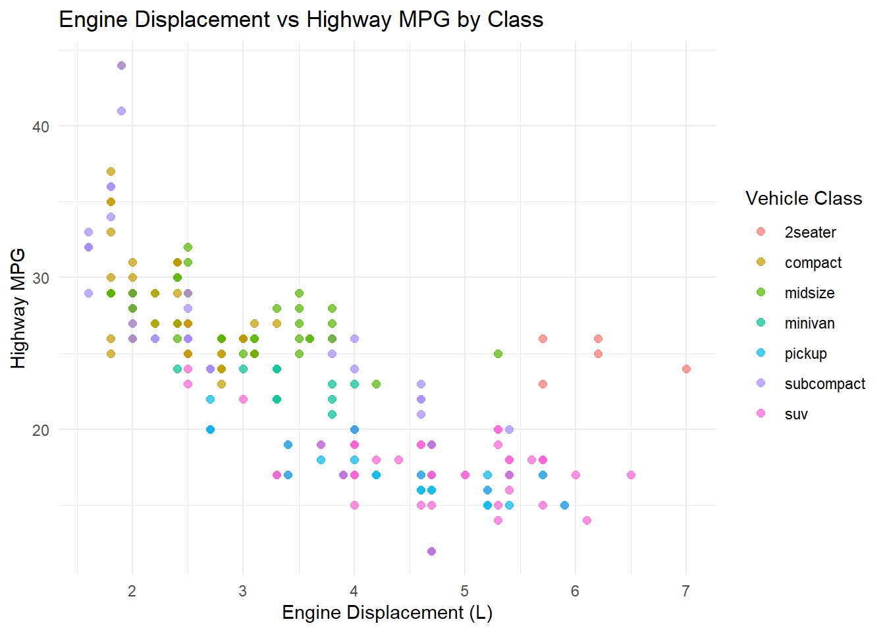
3.3 Line Plot — geom_line()
Useful for time series or ordered data.
# Average MPG by year and drive typempg %>%group_by(year, drv) %>%summarise(mean_hwy =mean(hwy), .groups ="drop") %>%ggplot(aes(x = year, y = mean_hwy, color = drv, group = drv)) +geom_line(linewidth =1.2) +geom_point(size =3) +labs(title ="Average Highway MPG Over Time by Drive Type",x ="Year",y ="Mean Highway MPG",color ="Drive Type" ) +theme_minimal()
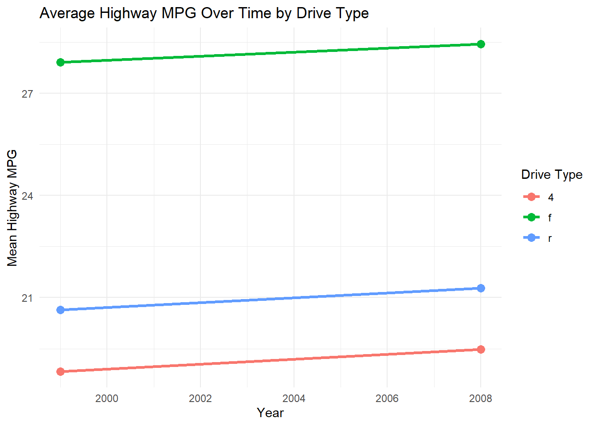
3.4 Bar Chart — geom_bar() and geom_col()
geom_bar() counts observations. geom_col() uses a pre-computed value.
# Count of cars by classggplot(mpg, aes(x =fct_infreq(class), fill = class)) +geom_bar(show.legend =FALSE) +labs(title ="Number of Vehicles by Class",x ="Vehicle Class",y ="Count" ) +theme_minimal()
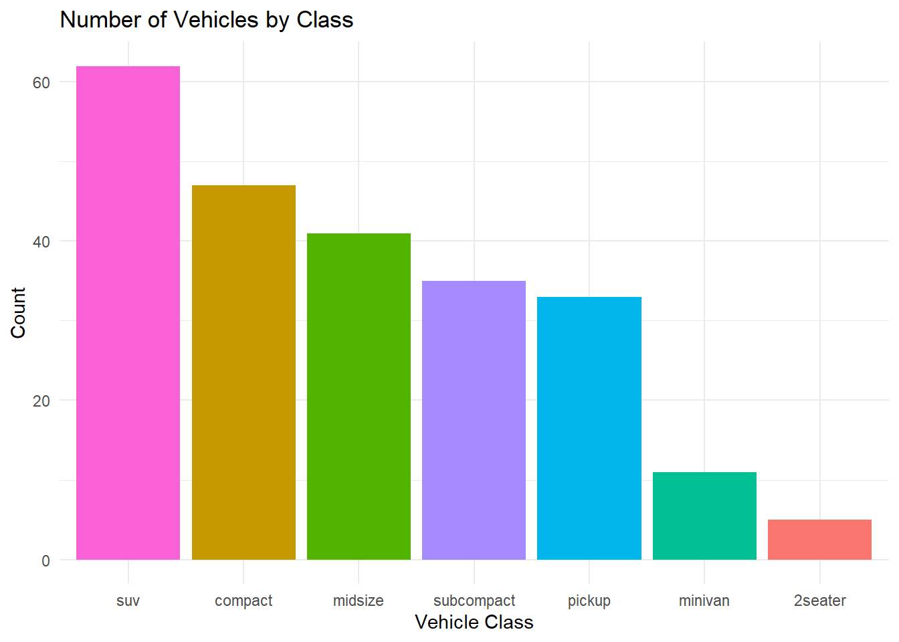
# Pre-computed averages with geom_colmpg %>%group_by(class) %>%summarise(mean_hwy =mean(hwy)) %>%ggplot(aes(x =reorder(class, mean_hwy), y = mean_hwy, fill = class)) +geom_col(show.legend =FALSE) +coord_flip() +labs(title ="Average Highway MPG by Class", x ="Class", y ="Mean MPG") +theme_minimal()
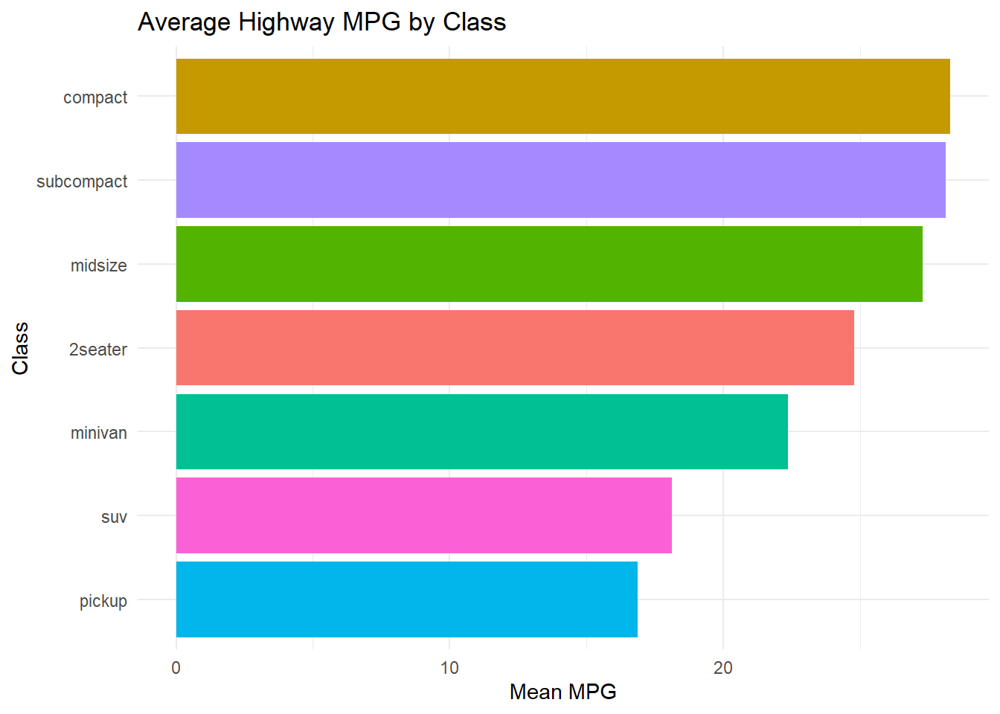
3.5 Histogram — geom_histogram()
ggplot(mpg, aes(x = hwy)) +geom_histogram(bins =20, fill ="steelblue", color ="white") +labs(title ="Highway MPG Distribution", x ="Highway MPG", y ="Count") +theme_minimal()
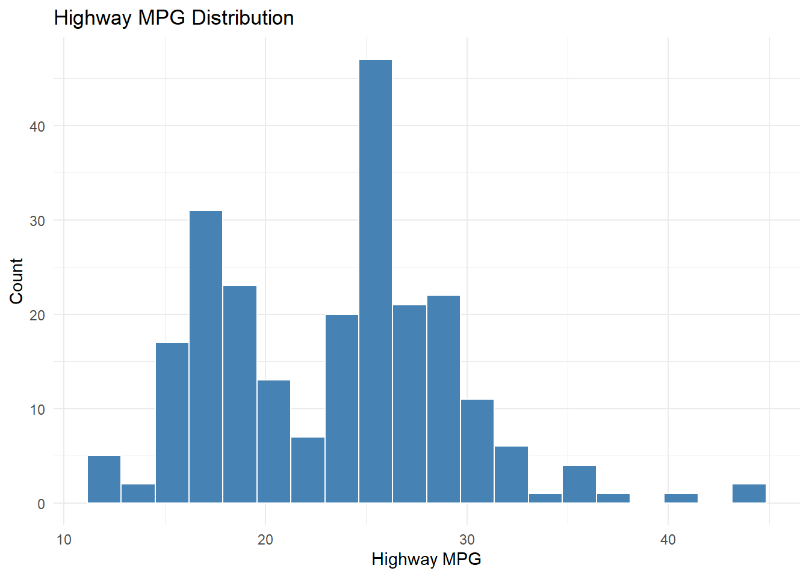
3.6 Boxplot — geom_boxplot()
ggplot(mpg, aes(x = drv, y = hwy, fill = drv)) +geom_boxplot(show.legend =FALSE) +labs(title ="Highway MPG by Drive Type", x ="Drive Type", y ="Highway MPG") +theme_minimal()
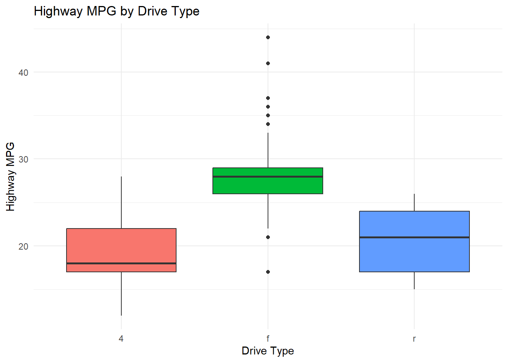
3.7 Smooth Line — geom_smooth()
Adds a regression line or LOESS smoother.
ggplot(mpg, aes(x = displ, y = hwy)) +geom_point(alpha =0.4, color ="gray50") +geom_smooth(method ="lm", color ="tomato", se =TRUE) +labs(title ="Engine Displacement vs Highway MPG (with Linear Fit)",x ="Displacement (L)",y ="Highway MPG" ) +theme_minimal()
`geom_smooth()` using formula = 'y ~ x'
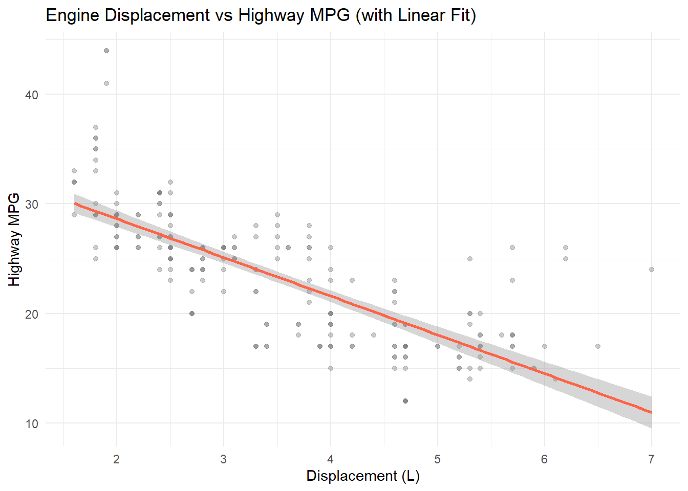
4. Aesthetics in Depth
Aesthetics can be mapped (tied to a variable) or set (fixed for all observations).
# Mapped: color varies by classggplot(mpg, aes(x = displ, y = hwy, color = class)) +geom_point()
# Set: all points are redggplot(mpg, aes(x = displ, y = hwy)) +geom_point(color ="red")
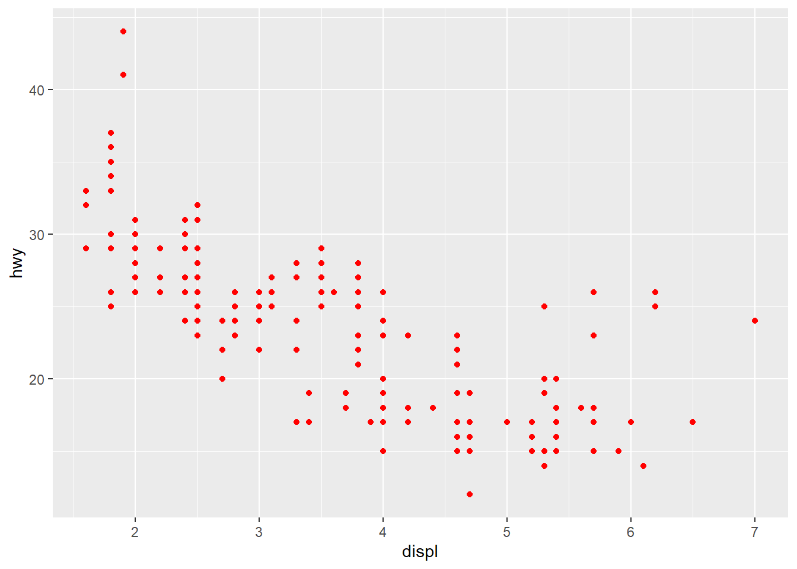
Common aesthetics: color, fill, size, shape, alpha, linetype.
5. Scales
Scales control how aesthetic mappings look.
ggplot(mpg, aes(x = displ, y = hwy, color = class)) +geom_point(size =2) +scale_color_brewer(palette ="Set2") +scale_x_continuous(breaks =seq(1, 7, by =1)) +labs(title ="Custom Color Scale and Axis Breaks") +theme_minimal()
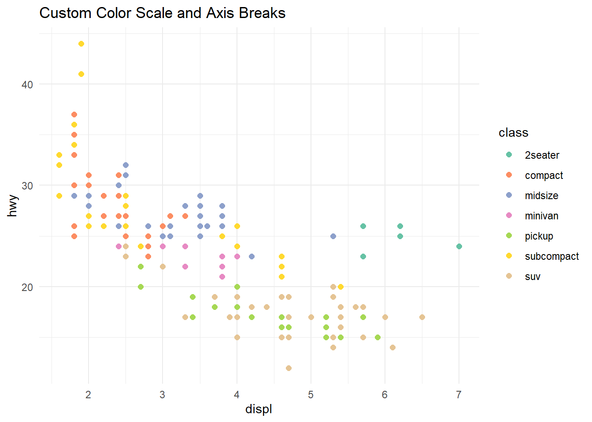
6. Facets
Facets split a plot into subplots based on one or two variables.
# facet_wrap: one variableggplot(mpg, aes(x = displ, y = hwy)) +geom_point(color ="steelblue", alpha =0.6) +facet_wrap(~ class, ncol =3) +labs(title ="Displacement vs MPG Faceted by Class") +theme_minimal()
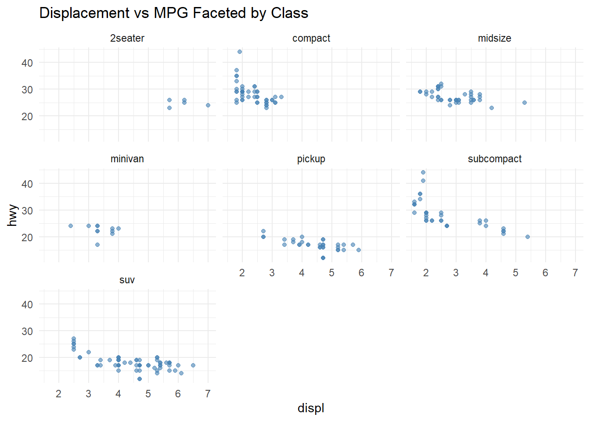
# facet_grid: two variablesggplot(mpg, aes(x = displ, y = hwy)) +geom_point(alpha =0.5) +facet_grid(drv ~ cyl) +labs(title ="Faceted by Drive Type (rows) and Cylinders (cols)") +theme_minimal()
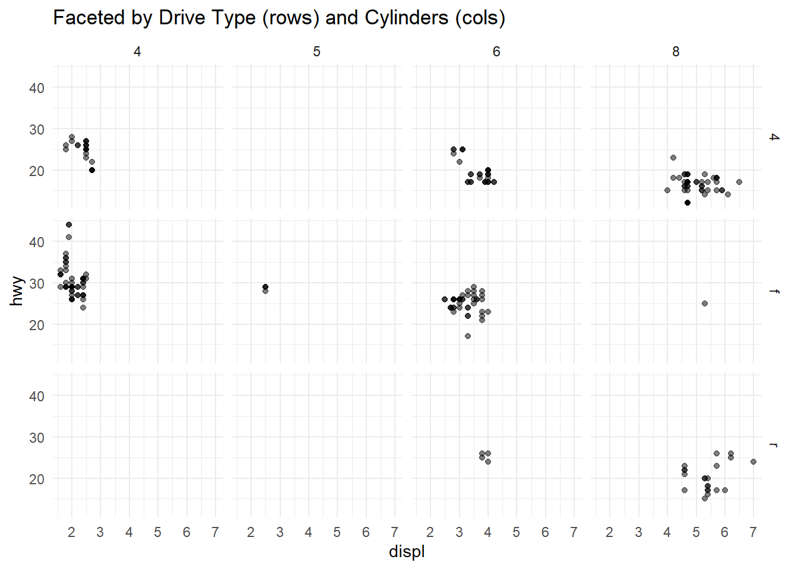
7. Themes and Labels
ggplot(mpg, aes(x = class, y = hwy, fill = class)) +geom_violin(show.legend =FALSE, trim =FALSE) +geom_boxplot(width =0.1, fill ="white", show.legend =FALSE) +labs(title ="Highway MPG Distribution by Vehicle Class",subtitle ="Violin plot with embedded boxplot",caption ="Source: ggplot2::mpg dataset",x ="Vehicle Class",y ="Highway MPG" ) +theme_classic() +theme(plot.title =element_text(face ="bold", size =14),plot.subtitle =element_text(color ="gray40"),axis.text.x =element_text(angle =30, hjust =1) )